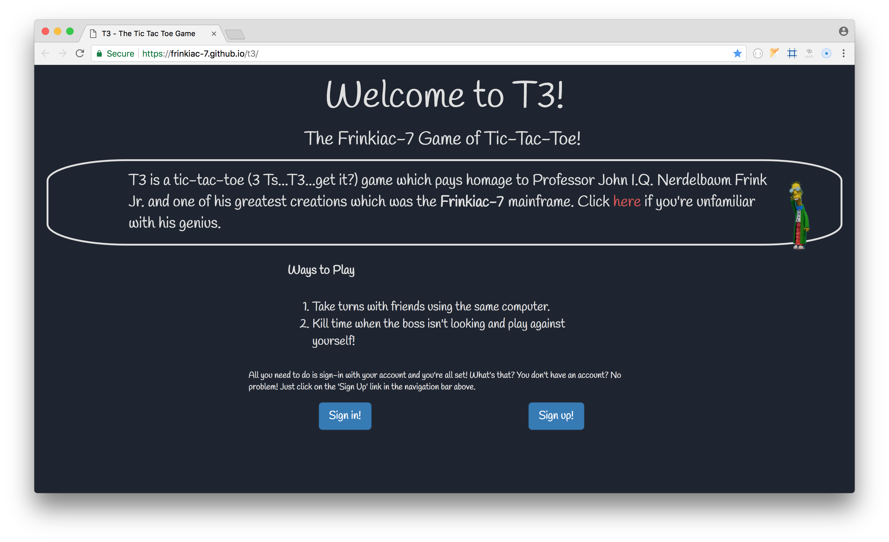
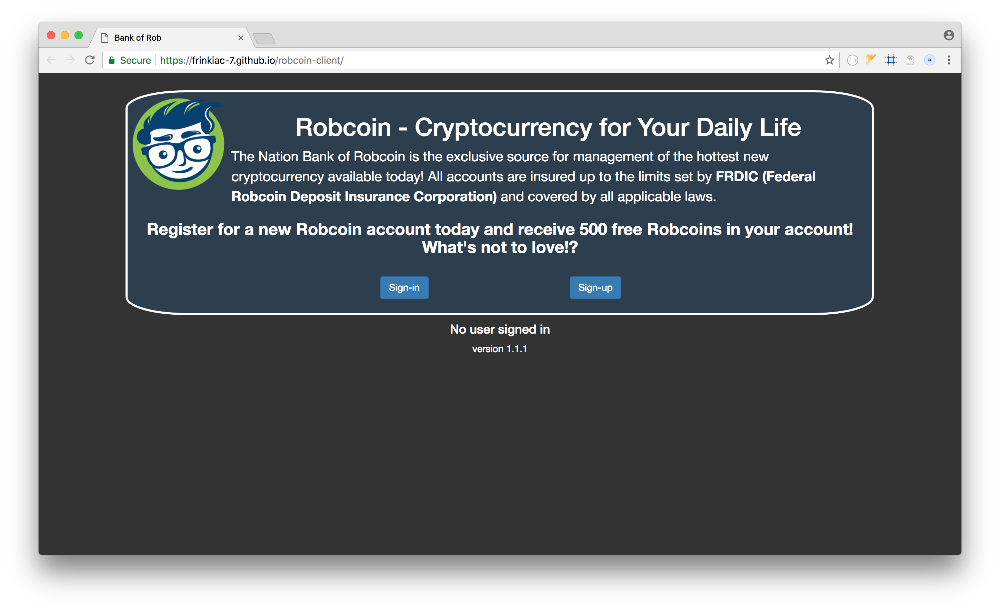

Full-stack web developer with extensive IT experience
I graduated from General Assembly's Web Development Immersive program in April, 2018. The transition to web development is merely the next stage of my technology journey. Previously, I've worked in the IT departments of Harvard University's Extension School, and Bain & Co. Most recently, I was a senior network engineer at Genzyme Corporation and infrastructure project manager at Sanofi Corporation.
Portfolio

T3 - The Frinkiac-7 Game of Tic-Tac-Toe
My first project at GA and a humorous homage to my favorite Simpson's character. This project opened my eyes to the realities of being a developer. I revisited it after the project was over and improved the game board. Details and source files available at GitHub.

Robcoin
As my first ever full-stack project, Robcoin was (to that point) the hardest app I'd ever built. I had envisioned so much more for it during the design stage. Part of me wants to revisit and improve it. Another part of me wants to leave it a as a reminder of how far I've come. Details and source files available at GitHub.

Clique
Clique is a full stack geolocation-based file sharing site built as a team project with two other class colleagues. After weeks of independent work it was exhilirating to be collaborating with other talented students, learning their workflows, and exploring different approaches to problems. Details and source files available at GitHub.
 KaizenRMS capstone
KaizenRMS capstone
KaizenRMS
KaizenRMS is a restaurant management menu and online ordering management system designed for small to medium sized businesses. The platform will expand to include restaurant reservation and delivery area mapping capabilities using 3rd party APIs. Details and source files available at GitHub.